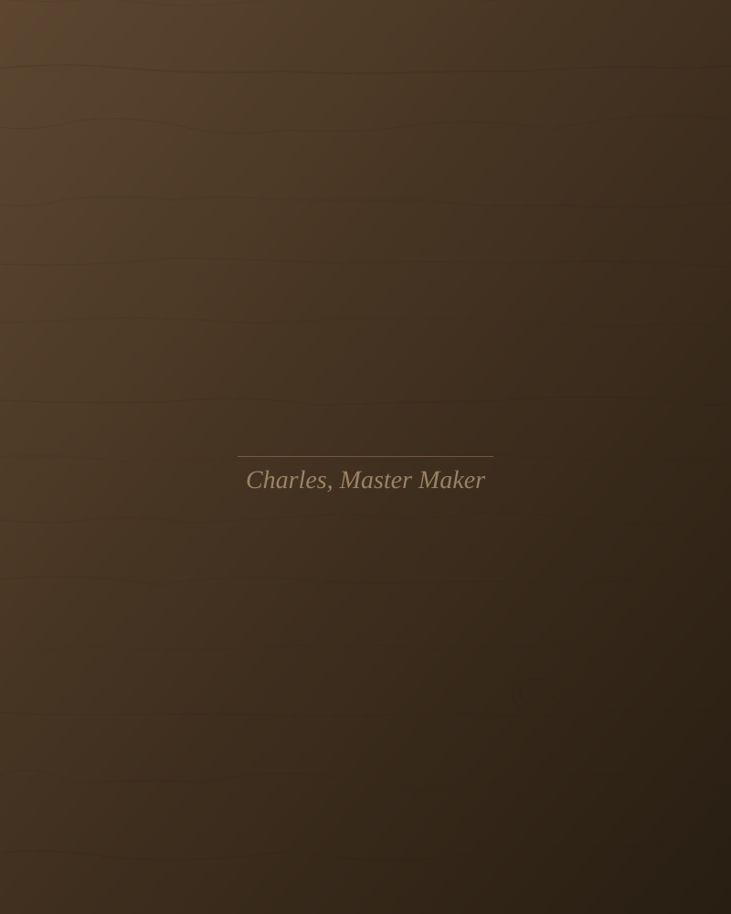

The Makers
Every piece is made by one man — Charles — in our Lagos atelier.
Every piece is made by one man — Charles — in our Lagos atelier.
Charles oversees every commission from first cut to final polish.
Not a team of contractors. One craftsman with 20 years of refined skill.
Charles signs and numbers every piece. That is his promise.

Charles founded WoodAccent Furniture with a single conviction – that the furniture in your home should outlast you. With over two decades spent mastering traditional joinery and West African hardwood craft, every piece that leaves the atelier bears his hand and his name.
Each piece is personally signed by Charles.
Includes a signed certificate of authenticity and a numbered maker's mark.
A small signature on the underside of the frame – a promise of quality you can trust.